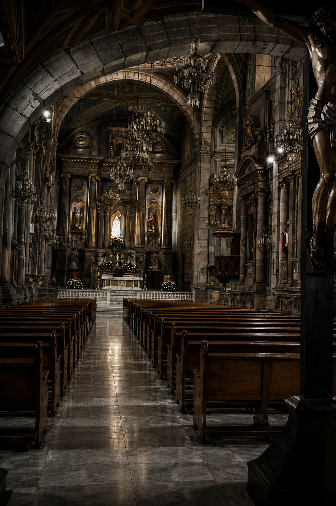
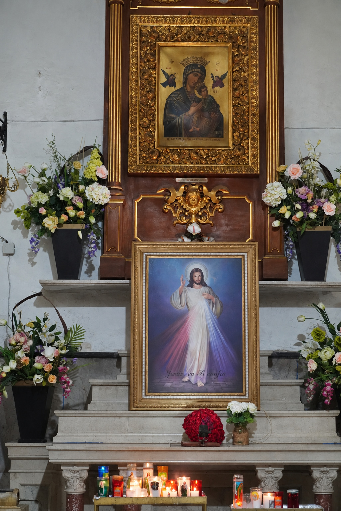
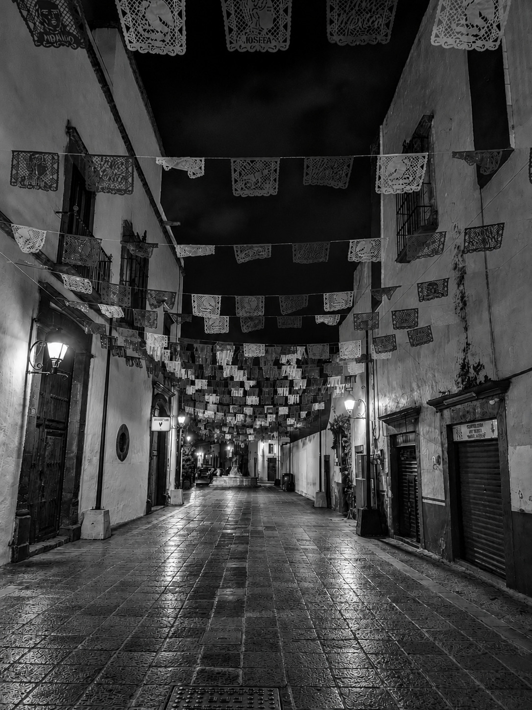
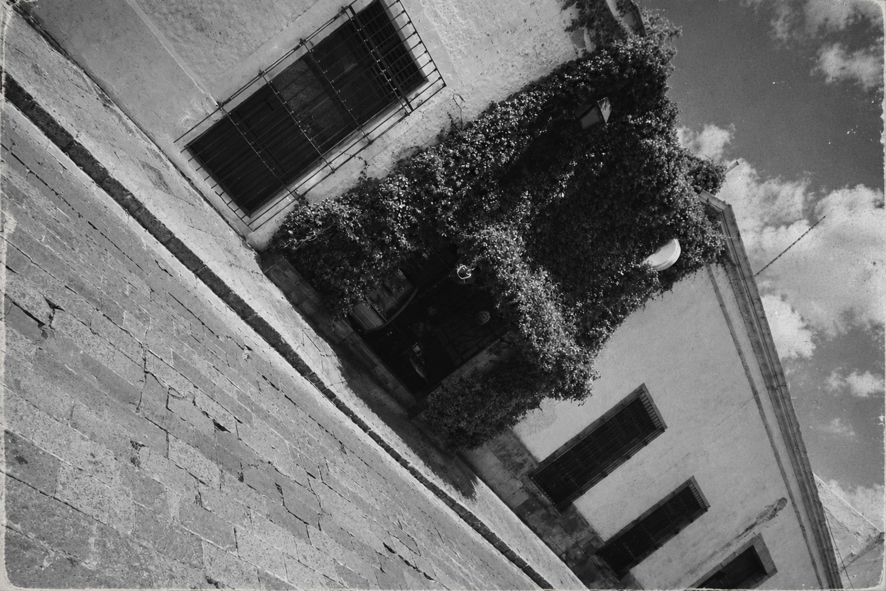
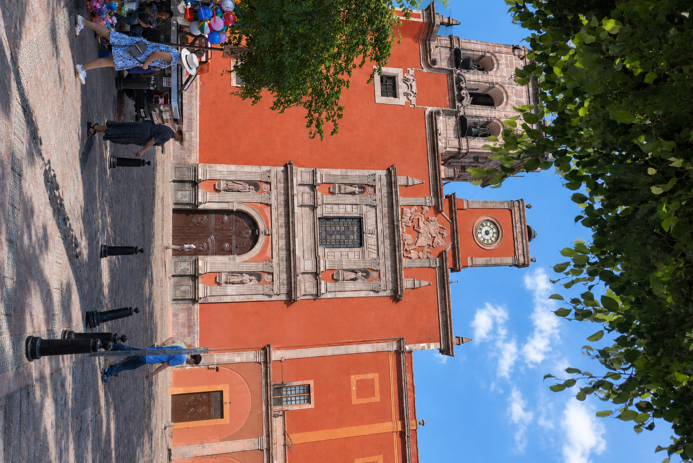
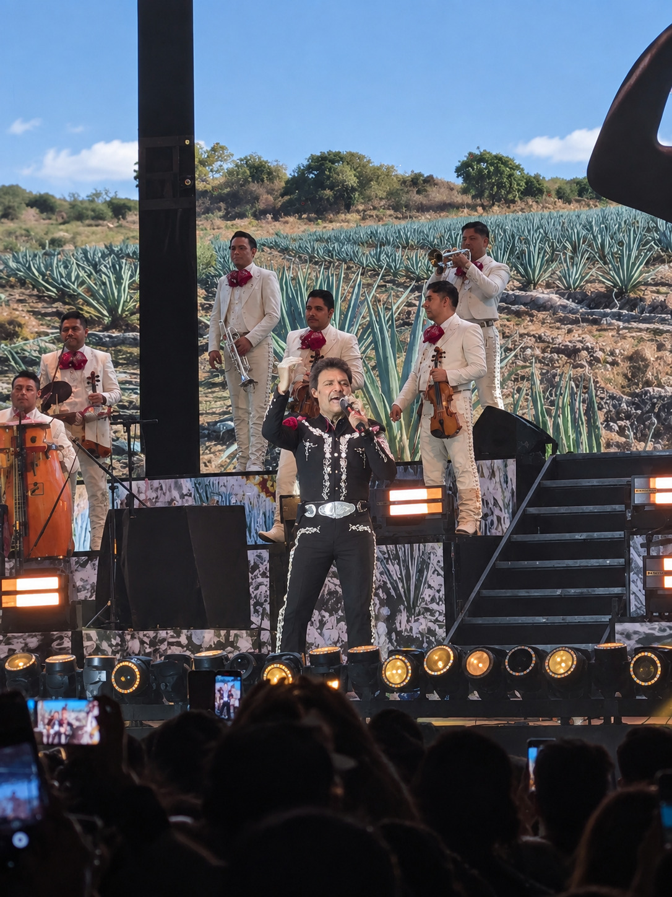
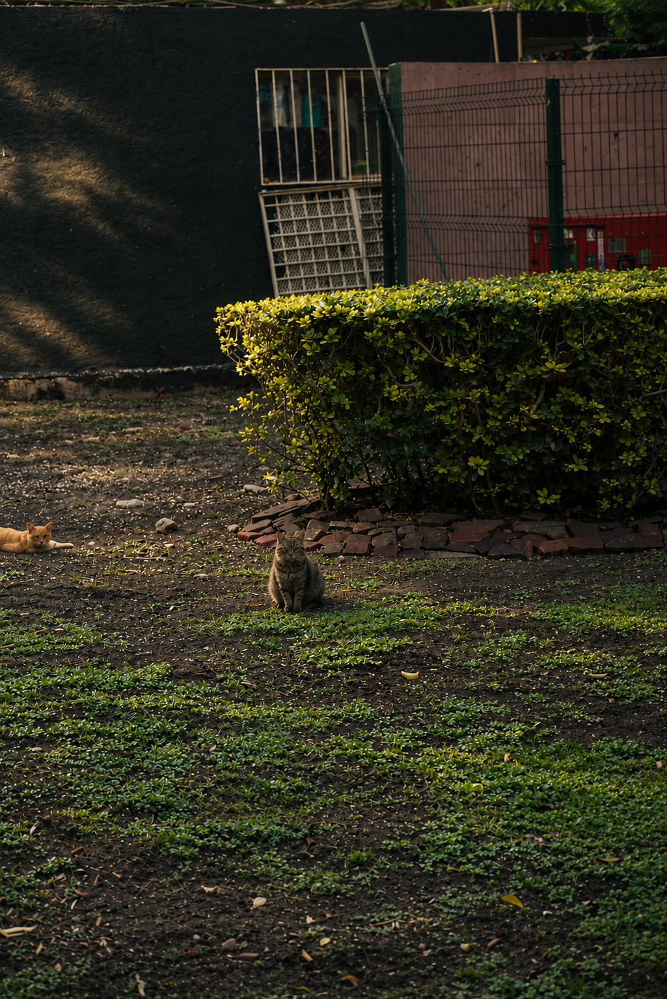
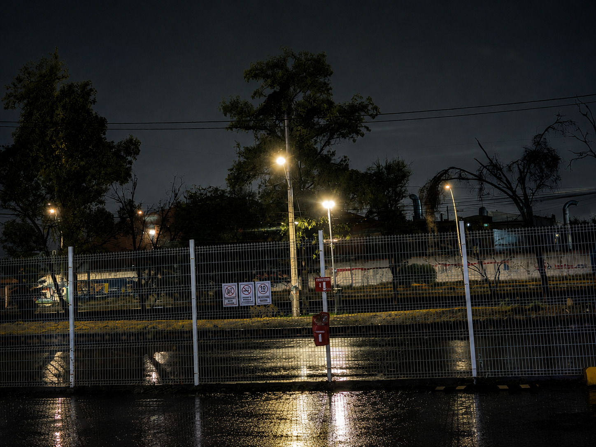

"Capturando lo real, sin filtros."
Fundador y creador visual detrás de _.Moonframes._.
Mi camino en la fotografía no empezó en un estudio ni con cámaras profesionales. Comenzó cuando era niño, llevando cámaras desechables y sencillas a todas partes, fascinado por la posibilidad de congelar un momento para siempre. Mi mamá solía decirme que terminaría siendo fotógrafo, y el tiempo terminó dándole la razón.
El año pasado viví un momento complejo al perder completamente todo mi equipo de trabajo. Sin embargo, esa pausa forzada me enseñó el verdadero valor de este oficio: la pasión no está en el equipo, sino en la mirada. Recomencé desde cero con más fuerza, claridad y gratitud.
"Mi objetivo no es crear fotos posadas ni rígidas. Busco las risas espontáneas, la mirada sincera y las conexiones humanas verdaderas."
Sesiones individuales o en pareja. Enfoque auténtico, natural y centrado en transmitir tu verdadera esencia sin rigidez.
Fotografía paciente para perros, gatos y otros compañeros, captando sus gestos únicos en ambientes cómodos.
Tomas para platillos, postres y creaciones culinarias con iluminación cuidada para resaltar texturas y sabores.
Fotografía sobria y minimalista para productos sencillos, marcas locales, proyectos independientes y emprendedores.
Detalles, texturas y miradas en las calles de Querétaro.








Para garantizar un proceso transparente y respetuoso con los tiempos de ambas partes.
Para formalizar y apartar tu fecha en la agenda es strictly necesario el anticipo del 50%. Este depósito garantiza tu lugar y cubre la reserva previa. En caso de cancelación por parte del cliente, el anticipo no es reembolsable.
Por motivos de seguridad e integridad profesional, cualquier sesión realizada a un menor de 18 años requiere la presencia constante y obligatoria de un padre o tutor durante todo el desarrollo de las fotografías.
Debido a la estructura de mi agenda de trabajo principal, las sesiones fotográficas presenciales se agendan y realizan únicamente los días martes dentro de Querétaro.
Llena tus datos y platícame sobre la sesión que imaginas.